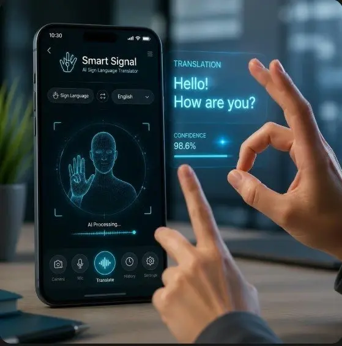
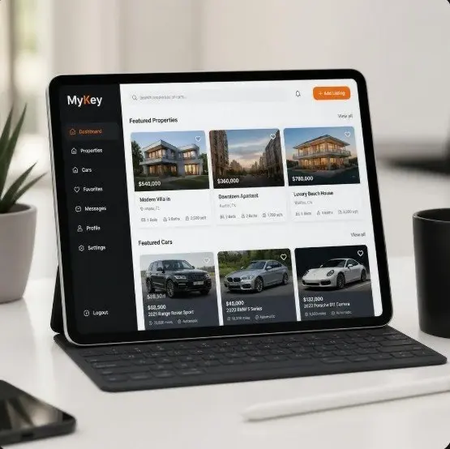
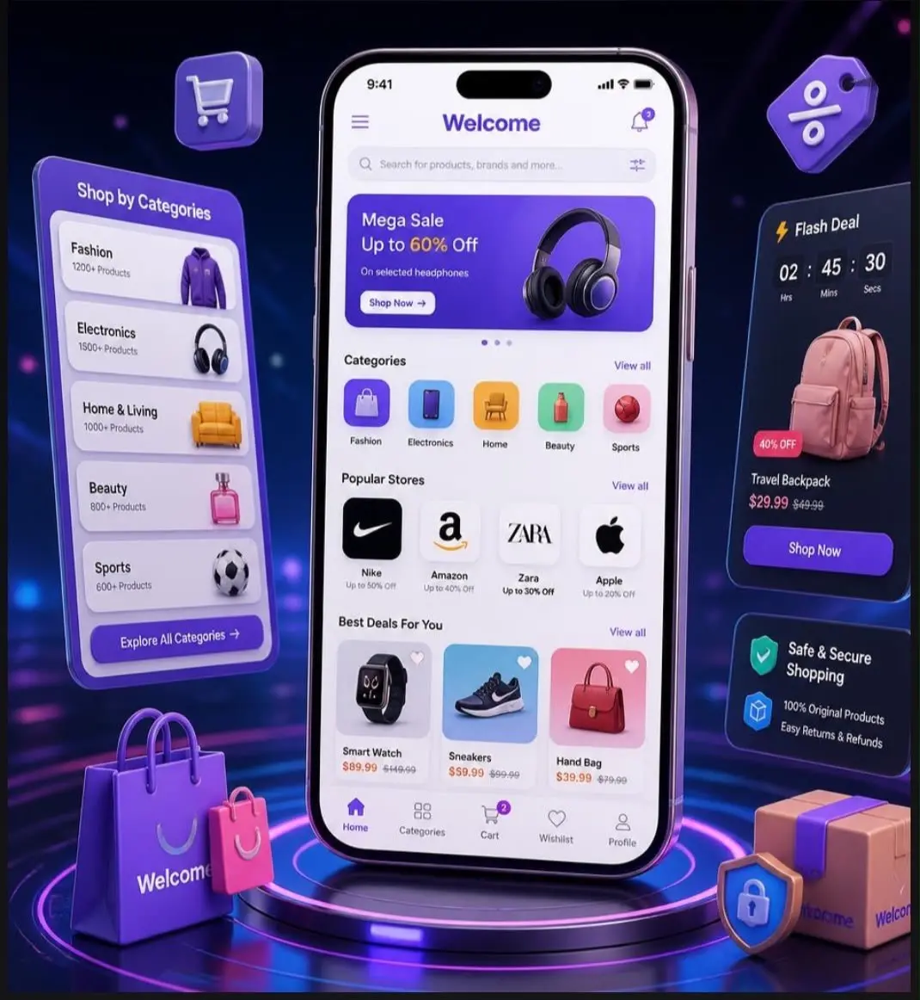
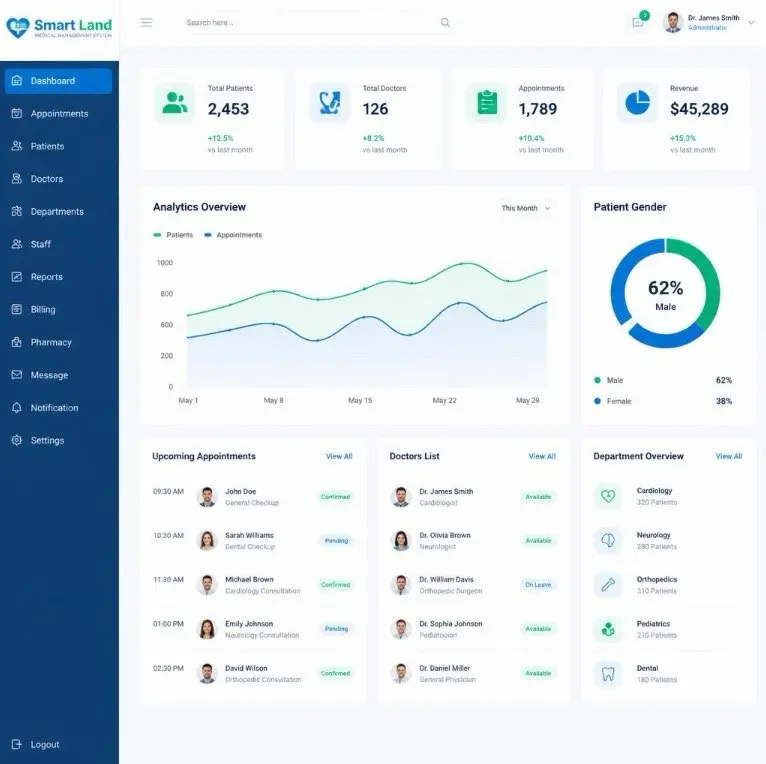

Innovative IT solutions and smart software engineering for modern enterprise challenges.
Founded in 2011, Smart Land provides enterprise technology consulting and software engineering. We develop customized digital platforms and integrate practical AI solutions to enhance performance across multiple industries.
Year Founded
Projects Delivered
% Success Rate

Computer vision mobile app that translates sign language into real-time text and synthesized speech.

Digital marketplace connecting users for real estate and automotive deals with verified listings.
Virtual learning platform with interactive virtual classrooms and student performance analytics.

Multi-vendor shopping application supporting integrated digital payments and delivery tracking.

Hospital management software for handling patient records, clinic appointments, and administrative tasks.
Video demonstrations of our mobile vision and enterprise healthcare software
Real-time demo showing sign language detection using mobile camera stream.
Overview of the user interface, patient record management, and doctor schedules.
Our standard development pipeline from discovery to deployment
Understanding system requirements, user needs, and feasibility.
Creating UI layouts, system architecture, and database models.
Frontend integration, backend services, and API connections.
Testing edge cases, security validation, and deployment.
Balancing innovation with security, privacy, and user trust